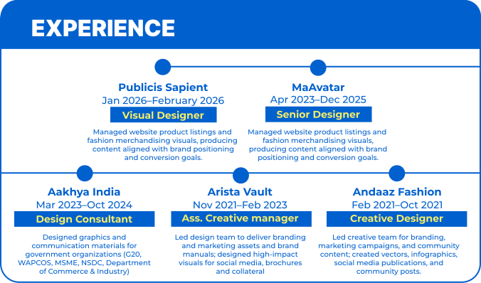

Hi, I’m Nisha.

Innovative Visual Designer with 5+ years of experience in branding, digital communication, and user-centered design. Proven track record of designing for high-impact clients including Government of India (G20, MSME, NSDC, Ministry of Commerce & Industry), startups, and global fashion brands. Adept at leading design teams, delivering creative strategies, and enhancing brand identity through Visual Storytelling. Recognized for cross-functional collaboration, art direction, and design leadership that drive engagement and elevate brand presence.

SKILLS
Core Skills
Branding · Visual Design · UX/UI · Art Direction · Illustration · Infographics · Social Media Design · Photography · Motion Briefing · Game Asset Concepting · NFT Graphics · Adobe Photoshop · Illustrator · InDesign · Figma · Presentation Design
Soft Skills
Leadership · Team Collaboration · Client Communication · Creative Problem-Solving
The
Process
Immersion & Intent
Before I design anything, I immerse myself in your world. I study the brand beyond the visuals — the ambition behind it, the people it speaks to, the feeling it should leave behind. Every decision starts with understanding the deeper intent, because great design is never decoration; it’s clarity with purpose. I ask difficult questions, challenge assumptions, and uncover the details others usually miss. That foundation is what allows the work to feel inevitable, not accidental.
Narrative & Direction
Strong visuals mean nothing without a strong point of view. Once I understand the core of the project, I shape a clear creative direction that gives the brand its voice, attitude, and emotional weight. This is where strategy and aesthetics become inseparable. Every reference, composition, type choice, interaction, and motion language is crafted to build a distinct identity — something memorable, not trend-driven. The goal is to create work that feels timeless, intentional, and unmistakably yours.
Design & Refinement
This is where precision matters most. I design obsessively — refining spacing, rhythm, typography, hierarchy, contrast, and interaction until everything feels effortless. The smallest details often create the strongest impression, so nothing is left unresolved. I believe exceptional design should feel simple, even when the thinking behind it is complex. Every screen, transition, and visual element is built to create an experience that feels polished, immersive, and emotionally resonant.
Craftsmanship & Longevity
I don’t believe in handing over work that only looks good in a presentation. The final outcome should perform beautifully in the real world — across devices, users, and future growth. I stay deeply involved through refinement, feedback, and implementation to ensure the original vision remains intact. The standard is simple: the work should still feel world-class years from now, not just impressive today.
- Research & Discovery
- Competitor Analysis
- Art Direction
- Content Strategy
- Brainstorming
- Story Boarding
- Logo Design
- Typography
- Publication Design
- Image Manipulation
- Illustrations/Sketching
- Merchandise Design
- Brand Guidelines
- Social Media Design
- Campaigns Design
- Copywriting
- Mood Boarding
- Video Editing
- Consumer Research and Analysis
- Visual Tone
- Brand Positioning
- Logo system creation
- Audience Segmentation
- Brand storytelling
- Tone and mood direction
- Design system creation
- Icon system creation
I design for the moment
things start to make ?